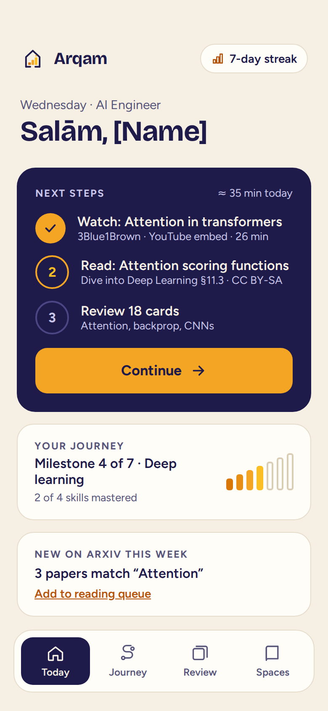
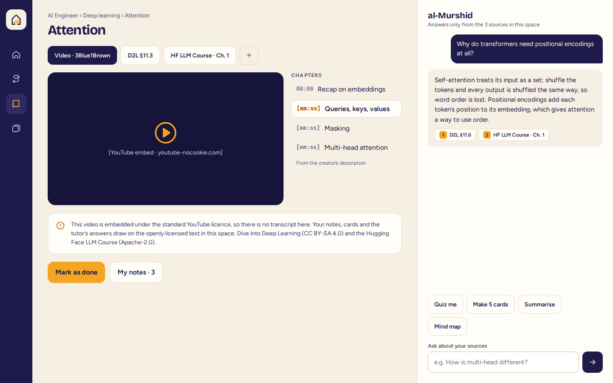
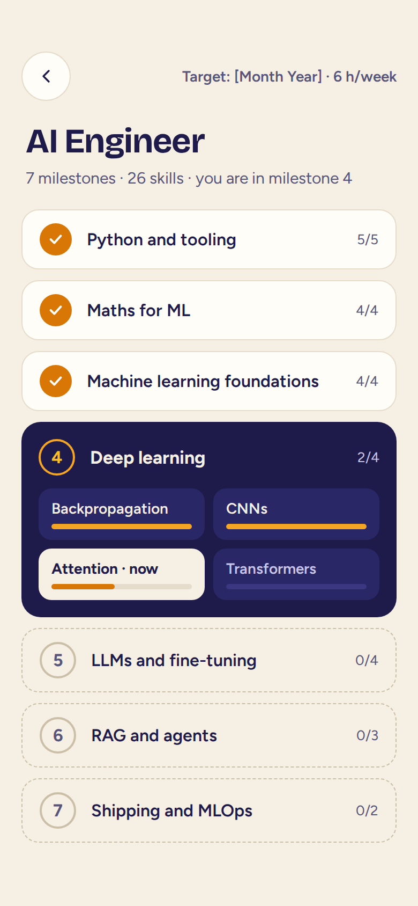
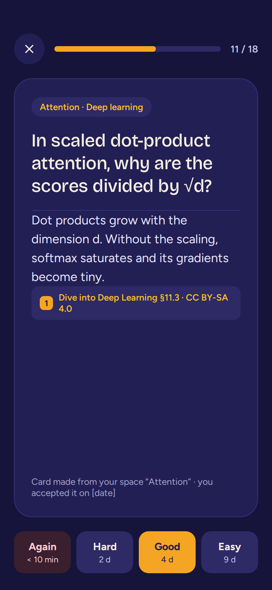
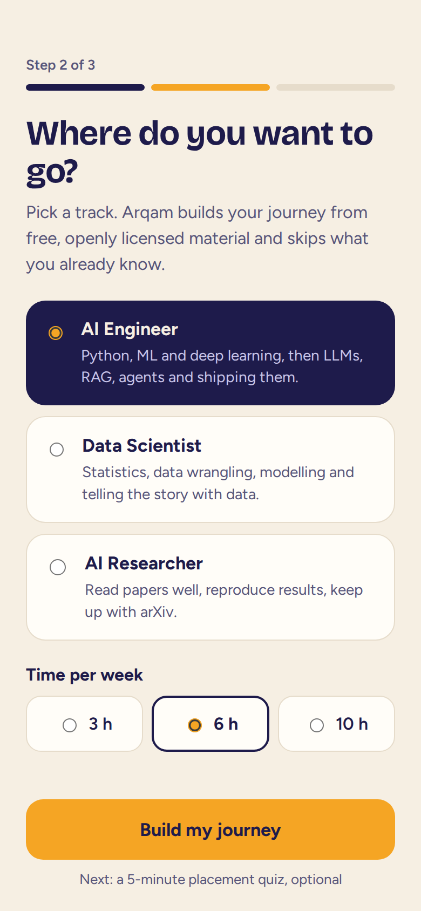

أرقم
From first steps to real work in AI and data.
One connected journey to AI-native AI engineer, data scientist or AI researcher. Built only from free, openly licensed material, and turned into active learning by a tutor that cites its sources.


How it works
One journey, one record of progress. Everything you watch, read, review and build moves the same map forward, so "where am I, and what next?" always has an answer.
A track
AI-native AI Engineer, Data Scientist or AI Researcher: learn the fundamentals, do the work with AI, verify the result. A short placement quiz skips what you already know.
In a space
Videos, course text, repos and papers side by side with al-Murshid, who answers only from your sources.
Cards and quizzes
Flashcards with spaced repetition and quizzes, generated from the sources and cited, accepted by you.
Skill by skill
Mastery per skill, milestones, streaks and new arXiv papers for what you are learning now.
Only material you are free to use
Arqam links and embeds anything publicly available, and only builds summaries, cards and quizzes from material whose licence allows it: CC BY, CC BY-SA, CC0, MIT, Apache and similar. Every item shows its licence, and every generated card shows where it came from.
- freeCodeCamp
- Hugging Face Learn
- Dive into Deep Learning
- arXiv
- GitHub
- YouTube (embedded)
- OpenStax
- Distill



When
- NowEarly preview at arqam-stg.siralabs.org, rebuilt as the work lands. Data there may be reset.
- Oct – Dec 2026Foundation, the connected learning model, licensed content, the study engine.
- January 2027Private alpha with invited learners on three tracks.
- Jan – Feb 2027arXiv papers, sharing, cohorts and public journey templates.
- March 2027Public beta with Free and Pro plans. Bring your own AI key on Free.
Dates are the current plan and may move. Arqam is part of Sira Labs.